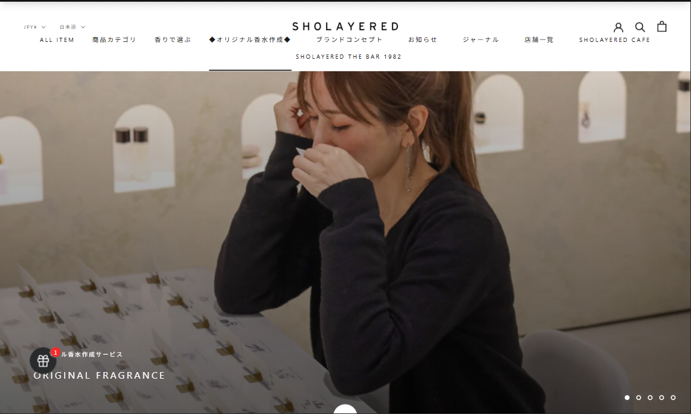
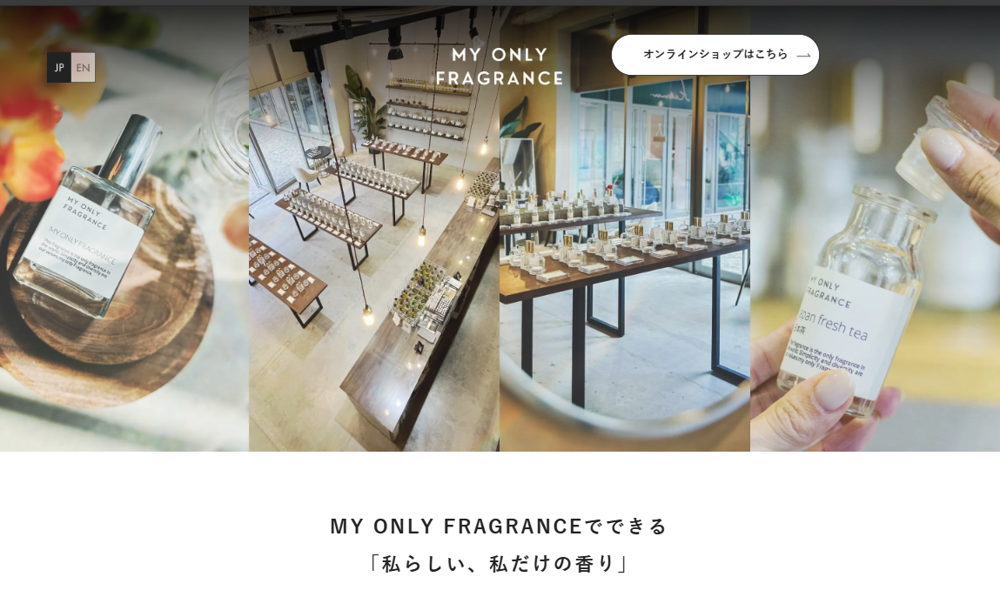
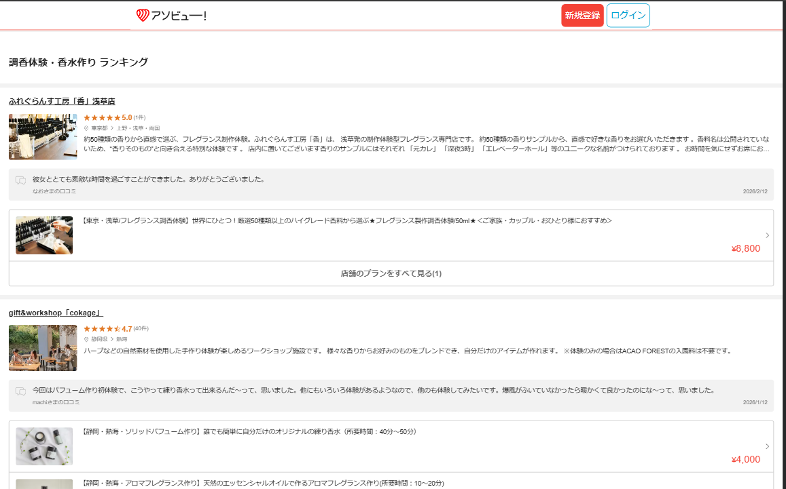

マーケットリサーチ
3C分析
■ターゲット顧客の特徴
主なターゲットは20代〜30代の女性を中心とした若年層である。特に都市部に住む会社員や学生が中心で、SNSを日常的に利用し、トレンドや体験型コンテンツに関心が高い層である。休日にはカフェ巡りやショッピング、イベント参加など「体験型の消費」を楽しむライフスタイルを持つ。また、カップルや友人同士での思い出づくりとして利用するケースも多く、デートや女子会のアクティビティとしての需要も高い。
■顧客のニーズ・悩み
既製品ではなく「自分だけの特別なもの」を求める傾向が強く、オリジナル性や体験価値を重視する。特に香水作り体験では、世界に一つだけの香りを作れることや、自分の好みを反映できる点に魅力を感じる。また、SNS映えする体験や写真を撮れる空間を求める傾向もある。一方で、予約方法が分かりにくい、料金や体験内容が事前にイメージしづらいといった不安があり、分かりやすい情報提供やスムーズな予約導線が求められている。
■顧客の行動パターン
情報収集は主にスマートフォンを利用し、Instagram・TikTok・Google検索などを通じて行われる。特にSNSでの口コミや体験投稿を参考にする傾向が強い。検索では「香水作り体験」「ワークショップ 東京」「デート 体験」などのキーワードで調査することが多い。興味を持ったサービスは公式サイトで詳細を確認し、料金・場所・予約のしやすさを比較検討したうえで予約を行う。また、体験後はSNSに写真や感想を投稿することが多く、これが新たな顧客の認知につながる。
■市場のトレンド
近年は「モノ消費」から「コト消費」へと価値観が変化しており、体験型サービスの人気が高まっている。特にオリジナル制作体験（香水、アクセサリー、キャンドルなど）はSNSとの相性が良く、若年層を中心に注目されている。また、観光客向けの体験型コンテンツとしても需要が拡大しており、インバウンド市場でも成長が見込まれる。そのため、予約のしやすさやSNSでの拡散性を意識したWebサイト設計が重要となる。
■競合サービス1：SHOLAYERED（ショーレイヤード）
- 特徴：香りのレイヤードを楽しむフレグランスブランド。店舗体験や香り選びを通じて、自分に合った香りを見つけられるブランド体験を提供している。
- 強み：
・洗練されたブランドイメージと世界観
・香りに対する高い専門性と商品力
・店舗体験を通してブランド理解を深めやすい - 弱み：
・オリジナル香水制作体験としての分かりやすさは弱い
・初めて利用するユーザーにとって体験内容が直感的に伝わりにくい場合がある - 差別化ポイント： 自社サービスでは、香りの世界観だけでなく「自分で作る体験」と「予約のしやすさ」を前面に出すことで、初回利用者でも参加しやすいサービス設計とする。
■競合サービス2：MY ONLY FRAGRANCE
- 特徴：京都・大阪・東京などに店舗を展開するオーダーメイド香水ブランド。カウンセリングを通じて自分だけの香りを作れる体験を提供している。
- 強み：
・オーダーメイド香水という独自性
・観光客やカップル向けの体験コンテンツとして人気
・香りの種類が多くカスタマイズ性が高い - 弱み：
・体験時間が長く、気軽に参加しにくい場合がある
・人気のため予約が取りづらいことがある - 差別化ポイント： 自社サービスでは、シンプルで分かりやすい体験フローと予約システムを設計することで、スムーズに体験できるユーザー体験を提供する。
■競合サービス3：アソビュー！（体験予約プラットフォーム）
- 特徴：全国の体験型アクティビティを予約できるプラットフォーム。香水作り体験やクラフト体験など様々なワークショップが掲載されている。
- 強み：
・多数の体験サービスを比較できる
・レビューや口コミが豊富
・予約機能が整備されている - 弱み：
・個別ブランドの魅力が伝わりにくい
・価格競争になりやすい - 差別化ポイント： 自社サイトではサービスの魅力や体験内容を詳しく伝えることで、ブランド価値を高め直接予約につなげる設計とする。
■提供できる価値
自社サービスは、ユーザーが自分だけの香りを作ることができる「体験型サービス」を提供する。単なる商品購入ではなく、香りを選び調合するプロセスそのものを楽しむことができる点に価値がある。また、友人やカップルで参加できる体験型アクティビティとして、思い出づくりや特別な体験を提供できる。さらに、オリジナル香水という唯一性のある商品を持ち帰ることができるため、体験価値と商品価値の両方を提供できる。
■独自の強み
自社サービスの強みは、ユーザーが迷わず予約できるシンプルなWeb導線と、分かりやすい体験内容の提示にある。体験内容、料金、予約方法を明確に提示することで、初めて利用するユーザーでも安心して予約できる環境を整える。また、スマートフォンからの利用を前提としたUI設計を行うことで、SNSや検索から訪れたユーザーがスムーズに予約へ進める導線を実現する。
■活用できるリソース
本プロジェクトでは、HTML・CSS・JavaScriptによるフロントエンド開発と、Java（Spring Boot）によるWebアプリケーション開発を活用し、予約機能を備えたサービスサイトを構築する。Figmaによるワイヤーフレーム設計やGitHubによるバージョン管理を活用することで、効率的な開発と品質管理を行う。また、SNSやWeb検索からの集客を想定したサイト構造を設計することで、オンラインでの認知拡大を図る。
■弱み・課題
新規サービスであるためブランド認知が低く、初期段階では集客が課題となる可能性がある。また、競合サービスと比較すると知名度や口コミが少ないため、ユーザーが安心して予約できるような情報設計やコンテンツの充実が必要となる。そのため、体験内容の分かりやすい説明、写真やレビューの掲載、SNSとの連携などを通じて信頼性を高めていく必要がある。
SWOT分析
サービス概要：オリジナル香水を制作できる体験型ワークショップサービス。ユーザーが香料を選び、自分だけの香りを作る体験を提供する。
ターゲット：20〜30代の女性を中心とした若年層。SNSを利用する都市部の会社員や学生、カップルや友人同士で体験型アクティビティを楽しみたいユーザー。
競合：THE FLAVOR DESIGN、MY ONLY FRAGRANCE、アソビュー！などの体験型サービス・体験予約プラットフォーム。
| プラス要因 | マイナス要因 | |
|---|---|---|
| 内部環境 |
Strengths（強み） ・オリジナル香水を作れる体験型サービスで差別化しやすい ・予約導線を分かりやすく設計したWebサイトによる高いユーザビリティ ・スマートフォン利用を前提としたUI設計による予約のしやすさ ・体験と商品を同時に提供できるため満足度が高い |
Weaknesses（弱み） ・新規サービスのためブランド認知が低い ・口コミやレビューが少なく信頼性がまだ十分ではない ・体験型サービスのため提供できる人数や時間に制限がある ・集客をWebやSNSに依存する可能性が高い |
| 外部環境 |
Opportunities（機会） ・「モノ消費」から「コト消費」への価値観の変化 ・SNSで拡散されやすい体験型コンテンツの人気拡大 ・観光客向け体験コンテンツの需要増加（インバウンド需要） ・カップルや友人向けの体験型デート・イベント市場の成長 |
Threats（脅威） ・既存ブランドの香水体験サービスとの競争 ・体験型ワークショップ市場の競争激化 ・景気や消費動向による娯楽支出の減少 ・体験予約プラットフォームに顧客を奪われる可能性 |
STP分析
■地理的変数（地域・都市規模）
・都市部（東京・大阪・京都などの大都市）
・観光地エリア（観光客が多い地域）
・若年層が多い商業エリア
■人口統計的変数（年齢・性別・職業・年収）
・年齢：20〜30代
・性別：女性中心（カップル利用も想定）
・職業：会社員、学生、フリーランス
・年収：300万円〜600万円程度の中所得層
■心理的変数（ライフスタイル・価値観）
・SNSを日常的に利用する
・「モノ」より「体験」を重視する価値観
・オリジナル性や自己表現を重視する
・友人や恋人と特別な体験を楽しみたい
■行動変数（利用頻度・求めるベネフィット）
・休日に体験型アクティビティを楽しむ
・SNSで話題のスポットを訪れる傾向がある
・デートや女子会などのイベントとして利用
・オリジナル商品や思い出として残る体験を求める
■選定したセグメント
① SNSを積極的に利用する20〜30代女性
② デートや記念日など特別な体験を求めるカップル層
■市場規模（推定）
日本の20〜30代女性人口は約1,500万人とされており、そのうち都市部に居住し体験型サービスに関心のある層を約10〜20％と仮定すると、潜在顧客は150万〜300万人程度と推定される。
■選定理由
20〜30代女性はSNSを通じた情報収集や体験共有を積極的に行う傾向があり、体験型サービスとの親和性が高い。また、カップル層はデートや記念日など特別な体験を求めるため、オリジナル香水制作という非日常的な体験に価値を感じやすい。
■このセグメントのニーズ
・SNS映えする体験や写真が撮れる空間
・自分だけのオリジナル商品を作れる体験
・友人や恋人と楽しめる特別なアクティビティ
・簡単で分かりやすい予約システム
■競合との差別化軸
・体験の気軽さ（予約のしやすさ・料金の分かりやすさ）
・体験価値の高さ（オリジナル性・思い出価値）
■ポジショニングマップ上での位置
横軸：体験の気軽さ（低〜高）
縦軸：体験の特別感（低〜高）
自社サービスは「気軽さ」と「特別感」の両方を兼ね備えたポジションを目指す。
既存ブランドは特別感が高い一方で価格や予約のハードルが高い場合が多く、体験予約サイトは気軽さはあるがブランド体験の価値が弱い。その中間に位置することで差別化を図る。
■そのポジションを取る理由
体験型サービス市場では「特別感」と「参加しやすさ」の両方が重要な価値となる。ユーザーが気軽に予約できる導線を提供しつつ、オリジナル香水制作という特別な体験価値を提供することで、幅広いユーザーに選ばれるサービスを目指す。
4P / 4C 分析
サービス概要：ユーザーが香料を選び、自分だけのオリジナル香水を制作できる体験型ワークショップサービス。体験を通して世界に一つだけの香水を作ることができる。
ターゲット：20〜30代の女性を中心とした若年層。SNSを利用する都市部の会社員や学生、カップルや友人同士で体験型アクティビティを楽しみたいユーザー。
| 4P（売り手視点） | 内容 | 4C（買い手視点） | 内容 |
|---|---|---|---|
| Product （製品） |
・オリジナル香水を制作できる体験型サービス ・香りを選んで調合するワークショップ形式 ・完成した香水を持ち帰ることができる |
Customer Value （顧客価値） |
・世界に一つだけの香りを作れる特別な体験 ・友人や恋人と共有できる思い出づくり ・自分の好みを反映したオリジナル商品 |
| Price （価格） |
・体験型サービスとして中価格帯の料金設定 ・コース（香料数など）による価格差を設定 ・事前に料金が分かる明確な価格表示 |
Cost （顧客コスト） |
・体験価値と商品を同時に得られるコストパフォーマンス ・分かりやすい料金体系による安心感 ・デートやイベントとしての価値を考慮した支出 |
| Place （流通） |
・公式Webサイトからのオンライン予約 ・スマートフォンを中心とした利用を想定 ・予約から体験までスムーズな導線設計 |
Convenience （利便性） |
・スマートフォンから簡単に予約できる ・体験内容や料金が分かりやすいサイト設計 ・スムーズに予約完了まで進めるユーザー体験 |
| Promotion （販促） |
・SNS（Instagram / TikTok）による情報発信 ・検索エンジンからの集客（SEO） ・体験写真や口コミによる認知拡大 |
Communication （対話） |
・SNSでの体験共有による口コミ拡散 ・ユーザー投稿による信頼性向上 ・Webサイトを通じた分かりやすい情報提供 |
競合サイト分析
サイト名：SHOLAYERED
URL：https://sholayered.jp/
■サイトの第一印象
上品で洗練された印象が強く、フレグランスブランドとしての世界観が丁寧に表現されている。全体的に余白を活かしたデザインで、高級感と落ち着きを感じさせるサイト構成になっている。
■良い点（デザイン・機能・コンテンツ）
・ブランドイメージを統一した洗練されたデザイン
・写真やビジュアルの見せ方が上手く、商品の魅力が伝わりやすい
・香りに関する世界観やブランドの価値が伝わる構成になっている
■改善できそうな点
・初めて訪れるユーザーには体験内容や利用導線がやや分かりにくい
・予約や来店アクションにつながる導線が弱く見える可能性がある
■自分のサイトに取り入れたい要素
・高級感のあるビジュアル設計
・ブランドの世界観を伝える写真や余白の使い方
（スクリーンショットを配置：

）
サイト名：MY ONLY FRAGRANCE
URL：https://myonlyfragrance.com/
■サイトの第一印象
明るく清潔感のあるデザインで、体験型サービスとして親しみやすい印象を受ける。写真や説明が多く、サービス内容を理解しやすいサイト構成になっている。
■良い点（デザイン・機能・コンテンツ）
・体験内容が写真付きで分かりやすく紹介されている
・店舗情報や予約ページへの導線が明確
・オーダーメイド体験の魅力が伝わるコンテンツ
■改善できそうな点
・情報量が多くページがやや長い
・スマートフォンではスクロール量が多くなる
■自分のサイトに取り入れたい要素
・体験の流れを分かりやすく説明するコンテンツ
・写真を活用したサービス紹介
（スクリーンショットを配置：

）
サイト名：アソビュー！
URL：https://www.asoview.com/
■サイトの第一印象
体験型アクティビティを検索できる大型予約サイトで、情報量が多く機能的な印象を受ける。検索や比較がしやすい設計になっている。
■良い点（デザイン・機能・コンテンツ）
・体験サービスを検索しやすいUI
・レビューや評価が掲載されている
・予約システムが整備されている
■改善できそうな点
・個々のブランドやサービスの魅力が伝わりにくい
・掲載サービスが多く差別化が難しい
■自分のサイトに取り入れたい要素
・分かりやすい予約導線
・口コミやレビューによる信頼性の向上
（スクリーンショットを配置：

）